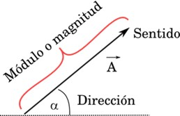
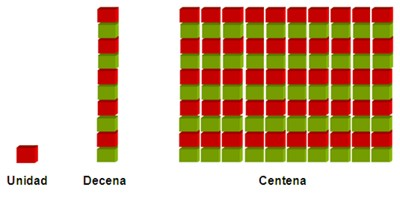
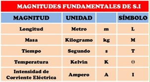
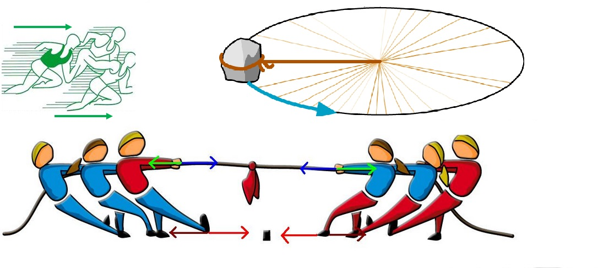
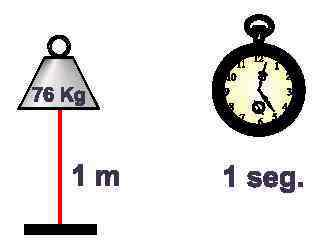

Magnitudes
Magnitud: todo aquello que se puede medir.
Existen dos maneras de clasificarlas, una es en Escalares y Vectoriales.
Magnitudes escalares: Son aquellas que quedan perfectamente determinadas por un número. Por ejemplo, la temperatura. Si decimos que hoy hace 39°C, no necesitamos saber más sobre la temperatura, y todos entenderemos que hace mucho calor. Otras magnitudes escalares que sólo necesitan de un número y su unidad para quedar perfectamente definidas son, por ejemplo, longitud, volumen, masa, tiempo, densidad y capacidad.
Magnitudes vectoriales: Para hablar de magnitudes vectoriales, primero debemos saber lo que es un vector.

Vector: El vector es un segmento orientado que posee 4 elementos fundamentales, estos son: Punto de aplicación, (donde nace) dirección, sentido y módulo. Módulo hace referencia a la intensidad del vector. Por ejemplo, en los casos de las fuerzas, si tuviéramos que representar una fuerza de unos 60 N (Newton), lo podríamos representar a través de una flecha de unos 6 cm, siendo cada cm equivalente a 10N. Acá toma importancia lo que llamamos escala. La escala nos sirve para representar los vectores de cualquier magnitud vectorial. En el ejemplo citado decimos que la escala fue de 1cm:10N. De esta manera se representan 60N en 6 cm.
Ahora sí, las Magnitudes Vectoriales son las que necesitan indicar dirección y sentido además del módulo (número) y la unidad para quedar bien definidas. Fíjense, que desde la física, unidad no significa lo mismo que la unidad en matemática.
Desde la Matemática

Mientras que desde la física

Acá cabe aclarar, que si bien la Física se apoya en muchas operaciones matemáticas, en física nunca vamos a tener números sueltos, cada número acompaña a su unidad; por ejemplo, 38°C cuando trabajamos temperatura (T°); 120 Km/h cuando nos referimos a la velocidad(v) o 30m cuando hablamos de distancia o altura (d o h). Por lo tanto, si recordamos que una Magnitud es todo lo que se puede medir, vemos en este ejemplo que se está midiendo la T°, v, d, h, por lo tanto, éstas son magnitudes. Los valores de estas magnitudes se expresan con un N° y su unidad: 38°C, 120 Km/h y 30m. Ahora para completar, faltaría que analicemos, cuáles de éstas mediciones quedan perfectamente definidas dando su N° y la unidad y para cuáles nos hace falta responder a la pregunta ¿para dónde?. Las que necesitan dar respuesta a esa pregunta serán magnitudes vectoriales (N°, unidad, dirección y sentido); las que no lo necesiten serán magnitudes escalares (N° y Unidad)
La fuerza es la típica magnitud vectorial. Cuando una fuerza se aplica a un objeto, es necesario saber su punto de aplicación, su dirección, sentido y el módulo o intensidad con la que dicha fuerza llega al cuerpo. Es decir que no alcanza con decir que la fuerza vale o tiene un módulo de 42 N (Newton), también se debe aclarar donde se aplica, con qué dirección y cuál es su sentido. Otras magnitudes vectoriales conocidas son: velocidad, aceleración, aceleración angular, cantidad de calor, entre otras.
En el siguiente gráfico se presentan ejemplos de magnitudes vectoriales en la izquierda (con color) y escalares en los esquemas de la derecha (blanco y negro)


Obra publicada con Licencia Creative Commons Reconocimiento Compartir igual 4.0